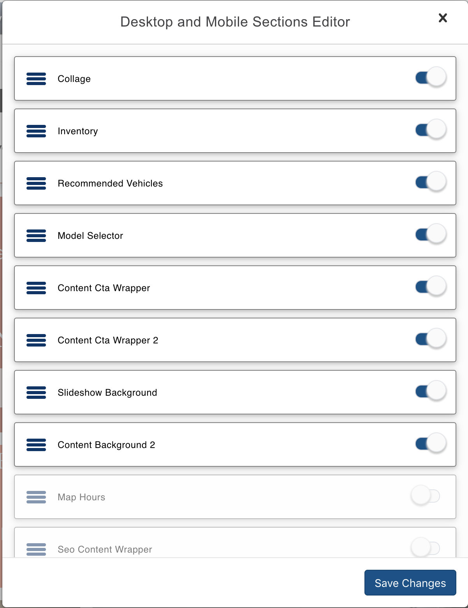
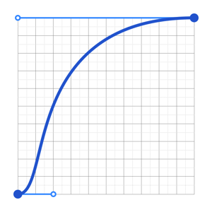

Drag and Drop interfaces using react-beautiful-dnd
Deepak Jayaram
VT Maple Script

Group Editor
- Editor for moving sections and groups around on a page

- Not for everyone - primarily for lists / list of lists / connected lists
Features

Easy to Style
- Natural Drag and Drop animations feel weighted and physical
- Uses native CSS under the hood to achieve smooth animation
- very minimal restrictions on styling - unopinionated
Accessible
- Accessible for mouse, touch and keyboard users
- Ships with support for D&D interactions using only a keyboard
- Awesome screen reader support (English supported out of the box 📦)
- uses aria attributes for drag interactions, focus and error states

Easy to use API
- Well written and excellent documentation overall
- Uses render props to eliminate the need for wrapping divs
- Freedom to choose your own data representation
- Plays well with your favorite state management and middleware libraries
API

Components
DragDropContext
<DragDropContext>
overview
onDragEnd
overview
Droppable
<Droppable>
overview
Draggable
<Draggable>
overview
Demo
opens in a new tab